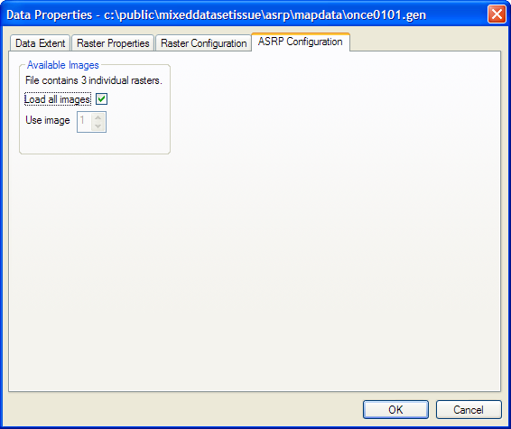

ASRP stands for Arc Standard Raster Product. The data contains a digital version of paper maps and air charts and is used by the UK Armed Forces for tactical and strategic operations.
Each ASRP dataset has a control file with extension .gen (general information file) that defines the contents of the ASRP datafile. Each ASRP datafile may contain more than one raster, and this .gen file allows you to select which raster you wish to display.
Although ASRP has an input coordinate system, MapLink detects this and will automatically convert from the ASRP coordinates (in simple terms, lat/lon) to the required output coordinate system.
Some ASRP data contains more than one map. The Format Configuration panel allows you to select which map from the set to use.
Links: